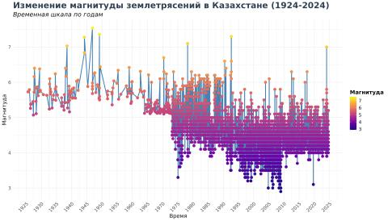
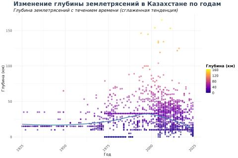
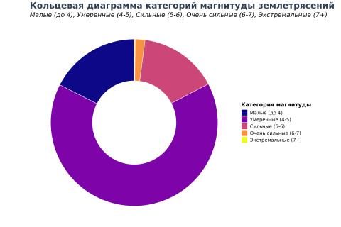
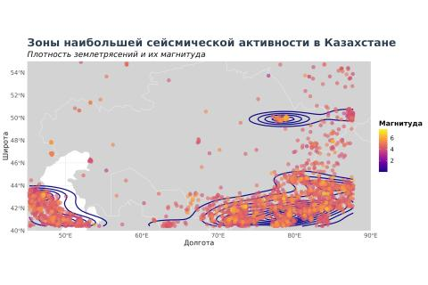
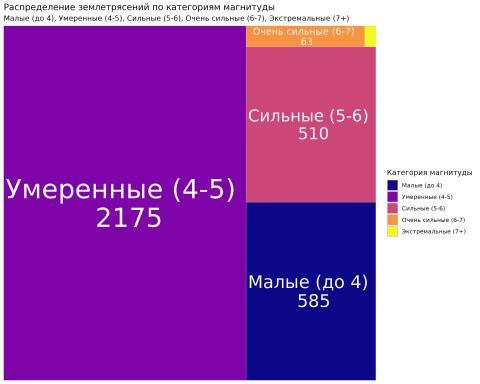
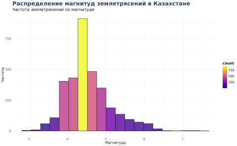

This analysis explores a century of earthquake activity in Kazakhstan, examining key parameters such as magnitude, depth, and geographical distribution. The study leverages data from the U.S. Geological Survey (USGS) and uses visualizations to uncover insights.

From 1924 to 2024, Kazakhstan experienced earthquakes of varying magnitudes. Notably, the strongest events (magnitude > 6) were predominantly recorded before the 1980s. This indicates that the frequency of extreme earthquakes has decreased over the decades.

Since the early 2000s, there has been a noticeable increase in deep earthquakes (depth > 100 km). This shift may be associated with changing tectonic activity beneath the region.

Most earthquakes in Kazakhstan fall within the moderate category (magnitude 4-5), accounting for 2175 recorded events. These moderate earthquakes are less likely to cause severe damage but remain significant for monitoring.

Analysis of geographical distribution reveals that the southeastern regions near the Tien Shan mountains and the Caspian area are the most seismically active zones. These regions are closely monitored for potential future seismic risks.

Earthquakes with magnitudes of 4-5 dominate the records. This prevalence highlights the need for infrastructure resilience in areas prone to such seismic activity.

The histogram shows that the majority of seismic events in Kazakhstan had a magnitude close to 4, underscoring their frequency and typical intensity.
This comprehensive analysis sheds light on the seismic patterns in Kazakhstan over the last century. Insights into magnitude trends, depth distribution, and geographic hotspots can aid in better preparedness and risk mitigation strategies for the region.
Source: U.S. Geological Survey (USGS)